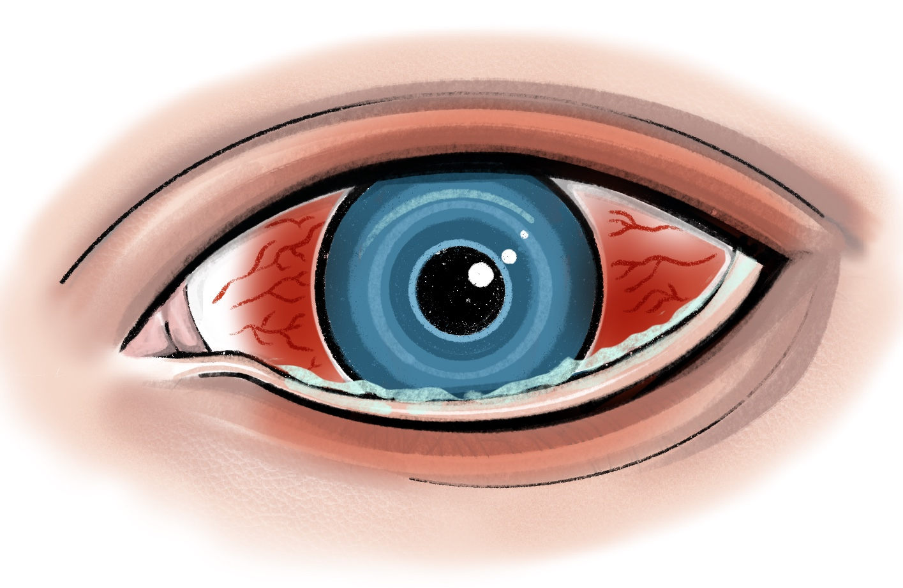

Bacterial
CONJUNCTIVITIS

acute onset (7-10d), red gritty eye, usually BL but may be sequential. Purulent discharge, crusted eyelids +/- chemosis (swelling of the conjunctiva).
Chloramphenicol 1% ointment QDS for 7 days. Hand hygiene measures. Advise patient to follow up in A&E or with GP if no resolution More information here.
Refer urgently ( within 24h) if worsening/ no resolution, or if blurred vision and corneal staining with fluorescein. If gonococcus or chlamydia suspected refer immediately.
Have a low threshold to refer within 24h if contact lens wear. Beware of gonoccocus/chlamydia especially if unilateral and hyperpurulent. If in doubt, take a sexual history, swab the conjunctiva and refer to ophthalmology immediately. Consider IM antibiotics as per local protocol.